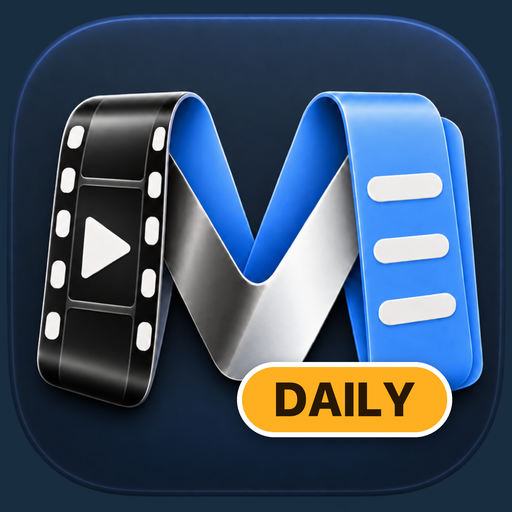

Your calls remember themselves.
Nobody wants to record, transcribe, label and file meetings. So you don’t. Meetiline Daily records every call on your Mac by itself — you and the others on two separate tracks, plus your screen — and later you just ask your AI what was said.
Beta: a call can still be missed or recorded badly. Not notarized yet: the first launch needs one extra click.
Tell the people you call that you record, and ask their consent where the law requires it.
What you get
The four chores, gone
You join the call. That’s it. Everything else happens by itself, on your Mac.
It records by itself
A call starts in Zoom, Slack, Teams, Telegram, FaceTime or a browser: recording starts. The call ends: it stops.
It writes the transcript
Speech recognition runs on your Mac. In Russian, English and many other languages. Nothing is uploaded.
It knows who spoke
You are one track, the others another, so “me” is never confused with “them”. The others are told apart by voice.
It’s all searchable
Every call, with its screenshots, in one list by day. Search what was said, or ask your AI.
The sound, done right
You and the others, on two separate tracks
The usual Mac screen recorder takes one microphone. In headphones the other people are missing; on speakers everything is echo. Meetiline Daily takes them separately.
- Others silent when you wear headphones
- Echo and room noise on speakers
- One tangled track: who said what?
- Headphones, AirPods, speakers: no difference
- Nothing has to play out loud
- Your quiet replies are kept, the echo is not
Later
Just ask your AI
You don’t open a recording. You ask. Meetiline Daily gives your own AI everything that was said and shown.
A made-up example of how it can look. The answer comes from your own AI, which looks things up in your calls.
- One click for ClaudeSettings → AI Apps connects Claude Desktop and Claude Code to your calls (the app must be in Applications; restart Claude after). Meetiline itself uses no AI service.
- Or copy for any chatSearch what was said, press Copy for Chat, paste into ChatGPT, Claude or anything else.
- Back to the exact momentAnswers can link back to the second of the call, and to the screen at that moment if you record it.
Set up once
A few minutes, then forget it
Install
One line in Terminal, or open the DMG and drag the app to Applications.
Allow a few things
Your microphone, the sound of call apps, your screen and notifications. macOS may ask for the screen again from time to time; Meetiline Daily shows what is missing and the one button that fixes it. The first run also downloads the speech model, about 0.6–0.9 GB, once.
Take a call
A notification tells you recording started. The menu bar icon turns red. When the call ends, the transcript appears in your list.
Install
Two ways, both take a minute
One line
Open Terminal, paste, press Return. It downloads the latest version, puts it in Applications and opens it.
curl -fsSL https://meetiline-daily.vercel.app/install | shIt is a short script you can read first. It checks the download against a checksum before installing.
Or the disk image
Download Meetiline-Daily.dmg, open it and drag the app to Applications. Because the app is not notarized yet, macOS stops the first launch:
- Open Meetiline Daily. macOS says it can’t be checked.
- Go to System Settings → Privacy & Security.
- Press Open Anyway, then Open. Once.
Needs a Mac with Apple silicon (M1 or newer) and macOS 14.2 or later. Keep the app in Applications: the Claude connection needs it there.
Privacy
It stays on your Mac until you ask your AI
Recordings, transcripts and screenshots are plain folders in your Movies folder. No account, no cloud, no analytics.
You are responsible for recording lawfully, as with any recorder: tell the others you record and ask their consent where the law requires it. Meetiline Daily is not for recording people in secret.